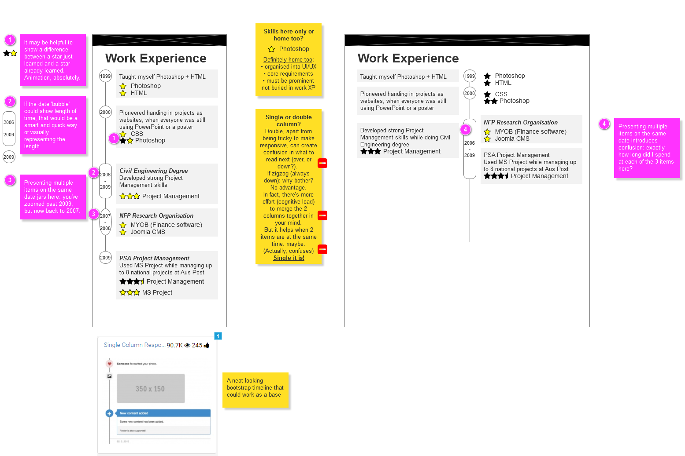

<!DOCTYPE html><html><head><title>Portfolio of Nathan Keen</title><meta charset="utf-8"><meta name="viewport" content="width=device-width, initial-scale=1, shrink-to-fit=no"><link rel="apple-touch-icon" sizes="180x180" href="/apple-touch-icon.png"><link rel="icon" type="image/png" sizes="32x32" href="/favicon-32x32.png"><link rel="icon" type="image/png" sizes="16x16" href="/favicon-16x16.png"><link rel="manifest" href="/manifest.json"><link rel="mask-icon" href="/safari-pinned-tab.svg" color="#5bbad5"><meta property="og:title" content="Nathan Keen's Portfolio"><meta property="og:image" content="images/logo-NK-1xxhdpi.png"><meta property="og:description" content="UX/UI web designer"><meta property="og:url" content="www.nathankeen.id.au"><meta name="theme-color" content="#ffffff"><link rel="stylesheet" href="https://maxcdn.bootstrapcdn.com/bootstrap/4.0.0-beta.2/css/bootstrap.min.css" integrity="sha384-PsH8R72JQ3SOdhVi3uxftmaW6Vc51MKb0q5P2rRUpPvrszuE4W1povHYgTpBfshb" crossorigin="anonymous"><link rel="stylesheet" href="css/fontawesome.css"><link rel="stylesheet" href="css/layout.css"></head></html><body id="top" data-spy="scroll" data-target="#navbot" data-offset="0"> <div class="container"><header><h1>Work Experience & Education</h1></header><div class="timeline"><div class="line text-muted"></div><div class="separator text-info"><time>Nov 2016 - current; 1 year</time></div><article class="card bg-info text-white"><div class="card-header icon bg-info"><i class="fas fa-building"></i></div><div class="card-header"><h2 class="card-title">Web Consultant (self run)</h2></div><div class="card-body"><p>Built ~1,000 & ~1,500 item eCommerce (Shopify) stores for Philworld Trading Pty Ltd & Naturally Wild &mdash;see <a href="/portfolio-NatWild2017.html">Naturally Wild</a><ul><li><span class="text-warning">Information Architecture<i class="fas fa-star ml-1"></i><i class="fas fa-star"></i><i class="fas fa-star"></i><i class="fas fa-star"></i></span><span>&mdash;see <a href="/portfolio-NatWild2017.html#IA">Naturally Wild (IA)</a></span></li><li>I modified the notifications to make it into a complete Tax Invoice (with GST and other parts) <span class="text-warning">Shopify/Liquid<i class="fas fa-star ml-1"></i><i class="fas fa-star"></i><i class="fas fa-star"></i></span></li></ul></p><p>Built business website for Red Cup Cafe &mdash;see <a href="/portfolio-RedCupCafe2017.html">Red Cup 2017</a><ul><li>Analysed the various customers, developed user personas, customer scenarios and journeys <span class="text-warning">User Research<i class="fas fa-star ml-1"></i><i class="fas fa-star"></i></span></li><li>Wireframed on paper, and prototyped in Joomla, with qualitative testing for feedback <span class="text-warning">Prototyping<i class="fas fa-star ml-1"></i><i class="fas fa-star"></i><i class="fas fa-star"></i></span></li><li>Constructed a much easier, fully responsive menu system <span class="text-warning">UI<i class="fas fa-star ml-1"></i><i class="fas fa-star"></i><i class="fas fa-star"></i><i class="fas fa-star"></i></span></li></ul></p><p>Managed Joomla & WordPress website maintenance for several sites<ul><li><span class="text-warning">Joomla<i class="fas fa-star ml-1"></i><i class="fas fa-star"></i><i class="fas fa-star"></i><i class="fas fa-star"></i></span></li><li> <span class="text-warning">WordPress<i class="fas fa-star ml-1"></i><i class="fas fa-star"></i><i class="fas fa-star"></i></span></li><li>Managed Cpanel, Apache, .htaccess, PHP.ini, Cron jobs, FTP and so on: <span class="text-warning">Webhosting management<i class="fas fa-star ml-1"></i><i class="fas fa-star"></i><i class="fas fa-star"></i></span></li></ul></p><p>Made this portfolio site &mdash;see <a href="https://github.com/nathankeenmelb/">Portfolio (via Github)</a><ul><li>Built using  <span class="text-warning">Bootstrap 4<i class="fas fa-star ml-1"></i><i class="fas fa-star"></i><i class="fas fa-star"></i></span><span class="text-warning">, Pug<i class="fas fa-star ml-1"></i><i class="fas fa-star"></i><i class="fas fa-star"></i></span><span class="text-warning">, and SASS<i class="fas fa-star ml-1"></i><i class="fas fa-star"></i><i class="fas fa-star"></i></span></li><li>Wireframed with paper and  <span class="text-warning">Axure<i class="fas fa-star ml-1"></i><i class="fas fa-star"></i></span></li></ul></p></div></article><article class="card card-outline"><div class="card-body"><figure><figcaption class="figure-caption text-center">The wireframe on Axure RP for this page</figcaption></figure></div></article><div class="separator text-primary"><time>2017</time></div><article class="card bg-primary text-white"><div class="card-header icon bg-primary"><i class="fas fa-graduation-cap"></i></div><div class="card-header"><h2 class="card-title">Various books/courses/self-teaching</h2></div><div class="card-body"><p>I taught myself Shopify & Liquid while working on two shops &mdash;see  <a href="/portfolio-NatWild2017.html">Naturally Wild</a></p><p>I taught myself Sass, the CSS preprocessor &mdash;see my Github <a href="https://github.com/nathankeenmelb/nk-portfolio">Github</a></p><p>I taught myself Bootstrap &mdash;see my Github <a href="https://github.com/nathankeenmelb/nk-portfolio">Github</a></p><p>I taught myself Github &mdash;see my Github <a href="https://github.com/nathankeenmelb/">Github</a></p><p>I taught myself Pug (Jade), the HTML preprocessor &mdash;see my Github <a href="https://github.com/nathankeenmelb/">Github</a></p><p>I took some Sitepoint courses to learn JavaScript & jQuery &mdash;see my <a href="https://codepen.io/nathankeenmelb">Codepens</a></p><ul><li>This is the point where I heavily reduced my reliance on CMS plugins and started adding JavaScript myself, for greater control and less bloat (and always being able to get a good solution) <span class="text-warning">JavaScript<i class="fas fa-star ml-1"></i><i class="fas fa-star"></i></span><span class="text-warning">, jQuery<i class="fas fa-star ml-1"></i><i class="fas fa-star"></i></span></li></ul><p>I started two courses in React (Wes Bos & Andrew Mead)</p><p>I read Designing for Emotion, by Aarron Walter</p><p>I read Design for Real Life, by Eric Meyer & Sara Wachter-Boettcher</p><p>I read User Story Mapping, by Jeff Patton &mdash;see my writeup <a href="/portfolio-2018.html#Learning">Portfolio (Learning)</a></p><p>I read Web Style Guide, 4th edition</p></div></article><div class="separator text-info"><time>Jan 2014 - Oct 2016; 3 years</time></div><article class="card bg-info text-white"><div class="card-header icon bg-info"><i class="fas fa-building"></i></div><div class="card-header"><h2 class="card-title">Information Officer at a Political Research Org</h2></div><div class="card-body"><p>Learned the best policies are those pursued with the head AND the heart, and thus the secret to most satisfying human experiences/communities. Also learned how the elite use psychology - on 'both' sides of politics - to push policies through!<ul><li><span class="text-warning">EQ (Emotional Intelligence)<i class="fas fa-star ml-1"></i><i class="fas fa-star"></i><i class="fas fa-star"></i></span></li><li><span class="text-warning">Psychology<i class="fas fa-star ml-1"></i><i class="fas fa-star"></i><i class="fas fa-star"></i></span></li></ul></p><p>Engineered the migration of their 100,000+ record database to a system that is poised to save $50,000/yr in productivity <span class="text-warning">Problem Solving<i class="fas fa-star ml-1"></i><i class="fas fa-star"></i><i class="fas fa-star"></i></span></p><p>Redesigned a 22 step process to discover party responses to a single 1-step, 1 page overview, with basic informal user research.<ul><li><span class="text-warning">Problem Solving<i class="fas fa-star ml-1"></i><i class="fas fa-star"></i><i class="fas fa-star"></i></span></li><li>I went through some lo-fi wireframes with my boss before building it in Joomla <span class="text-warning">Prototyping<i class="fas fa-star ml-1"></i><i class="fas fa-star"></i></span></li><li>Needed a responsive jQuery table, and custom jQuery <span class="text-warning">jQuery<i class="fas fa-star ml-1"></i><i class="fas fa-star"></i></span></li><li>We each collectively asked a few people we knew about what type of election resources they wanted <span class="text-warning">User Research<i class="fas fa-star ml-1"></i></span></li></ul></p><p>Designed an 'Action' platform prototype where users could email their state's members of parliament. This was my first informal taste of Agile development.<ul><li><span class="text-warning">Prototyping<i class="fas fa-star ml-1"></i><i class="fas fa-star"></i></span></li><li><span class="text-warning">Joomla CMS<i class="fas fa-star ml-1"></i><i class="fas fa-star"></i><i class="fas fa-star"></i></span></li><li><span class="text-warning">Agile project management<i class="fas fa-star ml-1"></i></span></li></ul></p><p>Project managed the development of the 'Action' site into a more capable system, using Postmark for email, Google Maps API for ease of address finding, and easy campaign building in the back-end. Developed a backlog in Excel, and slowly iterated (without even a permanent part-timer, this was slow!)<ul><li><span class="text-warning">Agile project management<i class="fas fa-star ml-1"></i><i class="fas fa-star"></i></span></li><li>I advised and updated the UI directly <span class="text-warning">UI<i class="fas fa-star ml-1"></i><i class="fas fa-star"></i><i class="fas fa-star"></i></span></li></ul></p></div></article><div class="separator text-primary"><time>2014</time></div><article class="card bg-primary text-white"><div class="card-header icon bg-primary"><i class="fas fa-graduation-cap"></i></div><div class="card-header"><h2 class="card-title">Grammar course</h2></div><div class="card-body"><p>Finally, the missing grammar course for my generation! </p><p>Around this time, I found <a href="http://www.editorsoftware.com/StyleWriter.html">"StyleWriter"</a> and other tools to improve my writing. I uncovered the importance of writing "plain English", particularly necessary for web content. There are automated ways to 'score' your writing. <span class="text-warning">Writing<i class="fas fa-star ml-1"></i><i class="fas fa-star"></i><i class="fas fa-star"></i></span></p></div></article><div class="separator text-info"><time>Feb 2011 - Dec 2013; 3 years</time></div><article class="card bg-info text-white"><div class="card-header icon bg-info"><i class="fas fa-building"></i></div><div class="card-header"><h2 class="card-title">PA to Director at CCCVaT</h2></div><div class="card-body"><p>Forget the title, this was a 2 person organisation, so I did everthing from admin to tech support, to web and graphic design and more!</p><p>Major projects such as design of the 'corporate' identity website cccvat.com.au <span class="text-warning">Joomla CMS<i class="fas fa-star ml-1"></i><i class="fas fa-star"></i><i class="fas fa-star"></i></span></p><p>A database interface for a custom CRM</p><ul><li><span class="text-warning">SQL<i class="fas fa-star ml-1"></i><i class="fas fa-star"></i></span></li><li><span class="text-warning">PHP<i class="fas fa-star ml-1"></i><i class="fas fa-star"></i></span></li></ul><p>An infographic on the process from 'Conflict to Peace' <span class="text-warning">Adobe Illustrator<i class="fas fa-star ml-1"></i><i class="fas fa-star"></i><i class="fas fa-star"></i></span><span class="text-warning">, Graphic Design<i class="fas fa-star ml-1"></i><i class="fas fa-star"></i><i class="fas fa-star"></i><span> &mdash;see <a href="https://www.behance.net/gallery/41117335/Infographic-Conflict-Resolution">graphic design portfolio</a></span></span></p><p>A massive guide through the myriad of church management software options, providing analysis and evaluation. <span class="text-warning">Information Architecture<i class="fas fa-star ml-1"></i><i class="fas fa-star"></i></span></p><p>Organised 250-person multi-day conference including creche and childcare! <span class="text-warning">Event Management<i class="fas fa-star ml-1"></i><i class="fas fa-star"></i><i class="fas fa-star"></i></span></p></div></article><div class="separator text-primary"><time>2012</time></div><article class="card bg-primary text-white"><div class="card-header icon bg-primary"><i class="fas fa-graduation-cap"></i></div><div class="card-header"><h2 class="card-title">Conflict Resolution Course</h2></div><div class="card-body"><p>Book + 3 day hands-on course + infographic on understanding conflict and how to resolve it. <ul><li><span class="text-warning">Conflict Resolution<i class="fas fa-star ml-1"></i><i class="fas fa-star"></i><i class="fas fa-star"></i></span></li><li><span class="text-warning">EQ (Emotional Intelligence)<i class="fas fa-star ml-1"></i><i class="fas fa-star"></i><i class="fas fa-star"></i></span></li></ul></p></div></article><div class="separator text-info"><time>Aug 2009 - Jun 2013; 2 years PT, 2 years FT</time></div><article class="card bg-info text-white"><div class="card-header icon bg-info"><i class="fas fa-building"></i></div><div class="card-header"><h2 class="card-title">Web Design Business, Sole Trader</h2></div><div class="card-body"><p>People started asking me to do websites for them; I obliged </p><ul><li>15+ Joomla websites<span class="text-warning"> Joomla CMS<i class="fas fa-star ml-1"></i><i class="fas fa-star"></i><i class="fas fa-star"></i></span></li><li>Developed bespoke website for Red Cup Cafe; <span class="text-warning">Photoshop<i class="fas fa-star ml-1"></i><i class="fas fa-star"></i><i class="fas fa-star"></i></span><span class="text-warning">, UI<i class="fas fa-star ml-1"></i><i class="fas fa-star"></i></span><span class="text-warning">, PHP<i class="fas fa-star ml-1"></i></span><span> &mdash;see <a href="https://www.behance.net/gallery/40807817/Redcup-Cafe-bespoke-web-design-build">graphic design portfolio</a></span></li><li> <span class="text-warning">Entreprenuership<i class="fas fa-star ml-1"></i></span></li></ul><p>I started looking for other work when I found I wasn't great at sales & networking</p></div></article><div class="separator text-primary"><time>2011</time></div><article class="card bg-primary text-white"><div class="card-header icon bg-primary"><i class="fas fa-graduation-cap"></i></div><div class="card-header"><h2 class="card-title">Business Commandos Course</h2></div><div class="card-body"><p>Developed a whole business/sales/marketing plan <span class="text-warning">Marketing<i class="fas fa-star ml-1"></i><i class="fas fa-star"></i></span></p><p>Learned about outsourcing and hired Philipinos<ul><li>Now I was managing a team of 2-4 <span class="text-warning">Project Management<i class="fas fa-star ml-1"></i><i class="fas fa-star"></i><i class="fas fa-star"></i></span></li><li>This required understanding key cultural differences and constant communication <span class="text-warning">EQ (Emotional Intelligence)<i class="fas fa-star ml-1"></i><i class="fas fa-star"></i></span></li></ul></p></div></article><div class="separator text-info"><time>Jul 2009 - Jun 2010; 1 year</time></div><article class="card bg-info text-white"><div class="card-header icon bg-info"><i class="fas fa-building"></i></div><div class="card-header"><h2 class="card-title">Project Manager at PSA PM</h2></div><div class="card-body"><p>Worked with a small but elite consultancy at Australia Post, managing up to 8 national projects</p><ul><li> <span class="text-warning">Project Management<i class="fas fa-star ml-1"></i><i class="fas fa-star"></i><i class="fas fa-star"></i></span></li><li>Managed 1500-2500 task Microsoft Project schedules (incl. gantt charts)<span class="text-warning"> MS Project<i class="fas fa-star ml-1"></i><i class="fas fa-star"></i><i class="fas fa-star"></i></span></li></ul></div></article><div class="separator text-info"><time>Dec 2006 - Jul 2009; 2.5 years</time></div><article class="card bg-info text-white"><div class="card-header icon bg-info"><i class="fas fa-building"></i></div><div class="card-header"><h2 class="card-title">NFP Political Research Org</h2></div><div class="card-body"><p>Apart from administration and tech support, I redeveloped their website of several hundred articles across about a dozen issues</p><ul><li> <span class="text-warning">Joomla CMS<i class="fas fa-star ml-1"></i><i class="fas fa-star"></i><i class="fas fa-star"></i></span></li><li> <span class="text-warning">Information Architecture<i class="fas fa-star ml-1"></i><i class="fas fa-star"></i></span></li></ul><p>Organised a week-long 100+ strong conference at La Trobe Uni; <span class="text-warning">Event Management<i class="fas fa-star ml-1"></i><i class="fas fa-star"></i></span></p></div></article><div class="separator text-primary"><time>2006 - 2008</time></div><article class="card bg-primary text-white"><div class="card-header icon bg-primary"><i class="fas fa-graduation-cap"></i></div><div class="card-header"><h2 class="card-title">Civil Engineering Degree</h2></div><div class="card-body"><p>Developed strong understanding & practice of <span class="text-warning">Project Management (Major)<i class="fas fa-star ml-1"></i><i class="fas fa-star"></i><i class="fas fa-star"></i></span></p><p>Pushed through countless projects with similar tenets to web design: tight timelines, multi-disciplinary, lots of technical unknowns at the start <span class="text-warning">Problem Solving<i class="fas fa-star ml-1"></i><i class="fas fa-star"></i></span></p><p>Finished with Honours and was asked if I wanted to pursue a research track; declined (I prefer a healthy balance between theory and practice).</p></div></article><div class="separator text-primary"><time>1999 - 2004</time></div><article class="card bg-primary text-white"><div class="card-header icon bg-primary"><i class="fas fa-graduation-cap"></i></div><div class="card-header"><h2 class="card-title">High School</h2></div><div class="card-body"><p>Pioneered handing in projects as websites, when everyone was still using PowerPoint or a poster!</p><p>Taught myself <span class="text-warning">Photoshop<i class="fas fa-star ml-1"></i><i class="fas fa-star"></i></span></p><p>Learned table layouts with <span class="text-warning">HTML<i class="fas fa-star ml-1"></i><i class="fas fa-star"></i></span></p><p>Learned basic <span class="text-warning">CSS<i class="fas fa-star ml-1"></i></span></p><p>Got top combined maths + science score in the year level (year 12), and ENTER of 96.75; <span class="text-warning">IQ<i class="fas fa-star ml-1"></i><i class="fas fa-star"></i><i class="fas fa-star"></i><i class="fas fa-star"></i></span></p></div></article></div></div><nav class="navbar navbar-expand navbar-dark fixed-top bg-dark" id="navtop"><button class="navbar-toggler" type="button" data-toggle="collapse" data-target="#navbarCollapse" aria-controls="navbarCollapse" aria-expanded="false" aria-label="Toggle navigation"><span class="navbar-toggler-icon"></span></button><div class="collapse navbar-collapse" id="navbarCollapse"><ul class="navbar-nav mr-auto"><li class="nav-item"><a class="nav-link" href="/">Home</a></li><li class="nav-item dropdown"><a class="nav-link dropdown-toggle" href="#" id="dropup2" data-toggle="dropdown" aria-haspopup="true" aria-expanded="false">Portfolio</a><div class="dropdown-menu" aria-labelledby="dropup2"><a class="dropdown-item" href="/portfolio-RedCupCafe2017.html">Red Cup Cafe 2017</a><a class="dropdown-item" href="/portfolio-NatWild2017.html">Naturally Wild 2017</a><a class="dropdown-item" href="/portfolio-InformationArchitecture.html">Information Architecture</a><a class="dropdown-item" href="/portfolio-2018.html">Portfolio 2018</a></div></li><li class="nav-item"><a class="nav-link" href="/work-experience.html">Work XP</a></li></ul><span class="badge badge-warning">Beta</span></div></nav><footer class="bg-info text-white"><div class="container"><div class="jumbotron"><div class="row"><div class="col-sm-6"><ul class="nav flex-column"><h4>Websites currently online</h4><p>Please just email me for the passwords if they're still offline</p><li class="nav-item"><a class="nav-link" href="http://redcup.com.au">Red Cup Cafe</a></li><p style="margin:1rem 0 0 0;">~1,000 product websites, on Shopify:</p><li class="nav-item"><a class="nav-link" href="https://natwild.com.au">Naturally Wild</a></li><li class="nav-item"><a class="nav-link" href="https://filipinofoodwholesale.com.au">Philworld Trading Pty Ltd</a></li></ul></div><div class="col-sm-6"><h4>Contact Nathan</h4><p>Phone: <a href="tel:+61405990801">0405 990 801</a></p><p>Email: <a href="javascript:location='mailto:\u006e\u0061\u0074\u0068\u0061\u006e\u002e\u006b\u0031\u0040\u0067\u006d\u0061\u0069\u006c\u002e\u0063\u006f\u006d';void 0"><script type="text/javascript">document.write('\u006e\u0061\u0074\u0068\u0061\u006e\u002e\u006b\u0031\u0040\u0067\u006d\u0061\u0069\u006c\u002e\u0063\u006f\u006d')</script></a></p><p>LinkedIn: <a href="https://www.linkedin.com/in/nathankeenmelbourne/">linkedin.com/in/nathankeenmelbourne/</a></p></div></div></div></div></footer><script src="https://ajax.googleapis.com/ajax/libs/jquery/3.2.1/jquery.min.js"></script><script src="https://cdnjs.cloudflare.com/ajax/libs/popper.js/1.12.9/umd/popper.min.js" integrity="sha384-ApNbgh9B+Y1QKtv3Rn7W3mgPxhU9K/ScQsAP7hUibX39j7fakFPskvXusvfa0b4Q" crossorigin="anonymous"></script><script src="https://maxcdn.bootstrapcdn.com/bootstrap/4.0.0-beta.2/js/bootstrap.min.js" integrity="sha384-alpBpkh1PFOepccYVYDB4do5UnbKysX5WZXm3XxPqe5iKTfUKjNkCk9SaVuEZflJ" crossorigin="anonymous"></script><script src="/js/custom.js"></script></body>